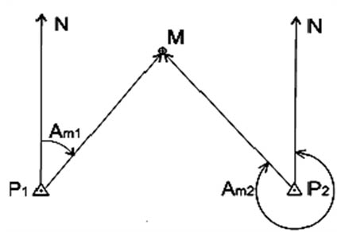

Визначення координат цілі за допомогою даних зі спостережного посту.
За азимутом і відстанню до об’єкта.
Використовуємо цей метод при умові, що ми знаємо місце стояння спостережного поста на карті.
- Визначається азимут на ціль
- Визначається відстань до цілі одним із доступних методів (описані в попередніх темах)
- Азимут переводимо в дирекційний кут для нашої карти
- На карті з точки спостережного поста проводимо напрям до нашої цілі відповідно до дирекційного кута
- За допомогою лінійки відмічаємо на цій прямій відрізок, що відповідає відстані на місцевості від спостережного поста до цілі
- Отримана точка і буде місцем знаходження цілі на карті. Тоді вже можна знаходити його координати.
Спряженим спостереженням.

Використовуємо цей метод при умові, що ми знаємо лиш місце стояння спостережних постів на карті. Маємо бачити ціль з обох спостережних постів.
- Визначається азимут до цілі з одного спостережного посту Ам1
- Визначаємо азимут до цілі з другого спостережного посту Ам2
- Переводим обидва азимути в дирекційні кути для нашої карти
- Проводимо напрямки до цілі з обох спостережних постів на карті відповідно до дирекційних кутів
- Місце в якому перетнуться два ці напрямки і буде місцем стояння цілі на карті.
За допомогою програм по типу Google Maps, армії SOS, Armor
При умові, що є можливість точно співвіднести місце стояння цілі на місцевості (за орієнтирами, особливостями рел'єфу, сусідніми об'єктами з картою цих програм